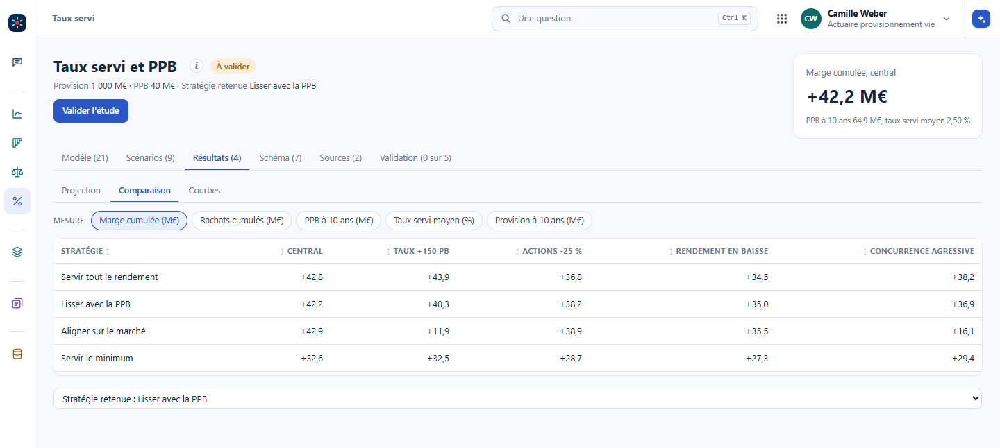
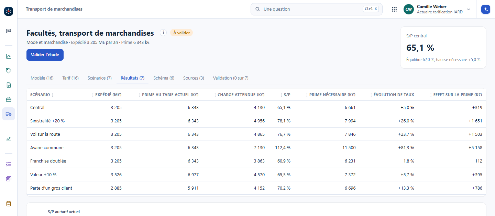
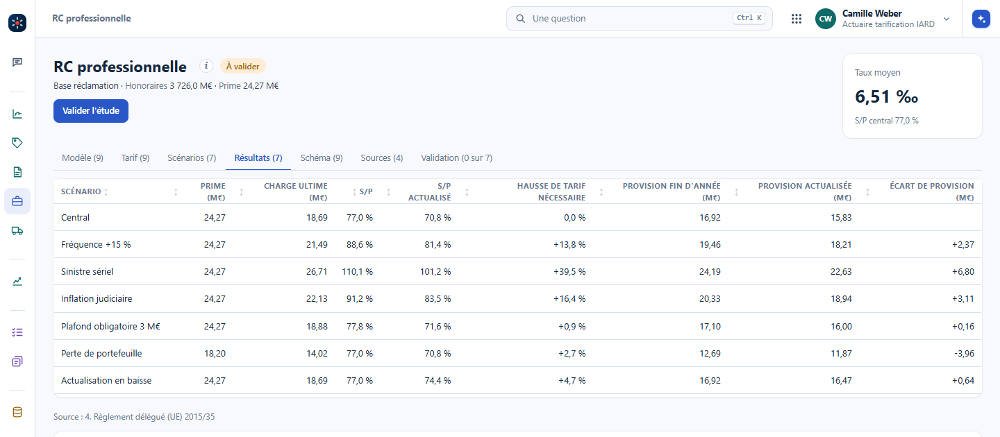

Le parcours de l'ALM sert ailleurs : des données, des modèles, des scénarios, des résultats, puis l'explication et la validation de l'actuaire, avec les mêmes onglets Schéma, Sources et Validation. Pendant la formation, on en a construit sur l'épargne en euros, le transport de marchandises et la responsabilité civile des avocats. Chacun porte une idée à retenir.
Chaque année, le portefeuille produit un résultat financier. La participation minimale vaut 85 % du résultat financier et 90 % du résultat technique, dans une règle simplifiée. La stratégie fixe le taux servi, jamais sous le taux garanti : servir tout le rendement, lisser avec la provision pour participation aux bénéfices (PPB), s'aligner sur le marché, ou servir le minimum. L'écart entre le minimum et ce qui est servi va à la PPB ou en sort, et une dotation non reprise au bout de huit ans est servie de force. Quand le taux servi passe sous celui du concurrent, les rachats montent.
Avec la stratégie « Lisser avec la PPB » à 2,5 %, au scénario central, la marge cumulée sur dix ans vaut +42,2 M€ et la PPB passe de 40 à 64,9 M€. Avec « Aligner sur le marché » et des taux à +150 pb, la marge reste positive, +11,9 M€, mais la PPB est vide dès 2030.

Dans Vision : #/taux-servi?ong=resultats&part=comparaison, au poste d'actuaire provisionnement vie. L'idée à retenir : la PPB est une réserve qui amortit les bonnes et les mauvaises années ; la stratégie qui garde les clients peut la vider quand les taux montent.
Le tarif se construit par segment, un mode de transport et une marchandise : une fréquence par million d'euros expédié, et un coût de sinistre de loi exponentielle, payé entre la franchise et le plafond par expédition. Un segment qui a peu de sinistres ne se tarife pas seul : la crédibilité mêle son taux et celui du portefeuille, avec un poids \(z = \dfrac{n}{n + k}\). Le taux commercial ajoute les frais, la marge et la réassurance.
Au scénario central, le S/P vaut 65,1 % contre 62 % d'équilibre : le tarif doit monter de 5,0 %. Avec une sinistralité à +20 %, le S/P passe à 78,1 %. Avec une avarie commune, il passe à 112,4 % et la hausse nécessaire à 81,3 %.

Dans Vision : #/transport?ong=resultats, au poste d'actuaire tarification IARD. L'idée à retenir : un seul événement peut peser plus que tous les petits sinistres, et un segment trop petit emprunte la crédibilité du portefeuille.
L'exposition est le montant des honoraires. La fréquence dépend de la profession, avocat, notaire ou expert-comptable, et de la taille du cabinet. Le coût d'un sinistre suit une loi de Pareto, à queue épaisse ; le coût sous un plafond vient de la valeur espérée limitée, et les coefficients de plafond passent d'un plafond à un autre. La garantie est en base réclamation : la charge d'un exercice se paie sur plusieurs années, avec l'inflation judiciaire, et la prime pure est actualisée.
Le taux moyen vaut 6,51 ‰ des honoraires et le S/P central 77,0 %. Avec un sinistre sériel, un même montage conseillé par beaucoup de cabinets, le S/P passe à 110,1 % et le tarif doit monter de 39,5 %.

Dans Vision : #/rc-professionnelle?ong=resultats, au poste d'actuaire tarification IARD. L'idée à retenir : dans une branche longue, le risque est le sériel et le temps, un même conseil qui se répète et une charge qui se paie sur des années.
Transport : pourquoi l'avarie commune est-elle un scénario à part, et pas une hausse de fréquence de plus ?
C'est un seul événement en mer qui touche toutes les marchandises du navire, abîmées ou non : chacune contribue au sacrifice fait pour sauver le navire, selon les règles d'York et d'Anvers. Une hausse de fréquence répartit le choc sur tout le portefeuille ; l'avarie commune le concentre. Dans Vision, cette contribution unique fait passer le S/P de 65,1 % à 112,4 %.
Taux servi : « Aligner sur le marché » garde une marge positive même avec des taux à +150 pb. Où est le problème ?
La marge tient parce que la PPB paie l'écart avec le concurrent. Elle est vide dès 2030 : l'année suivante, il n'y a plus de réserve pour lisser, et le taux servi décroche, ou la marge paie seule. La stratégie se juge sur la marge et sur la PPB qui reste.